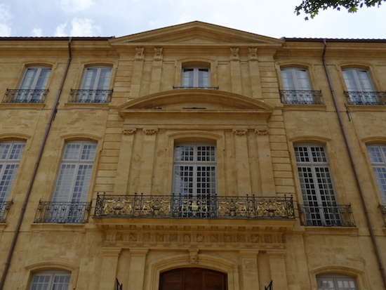
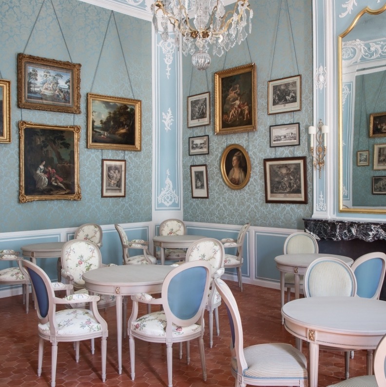
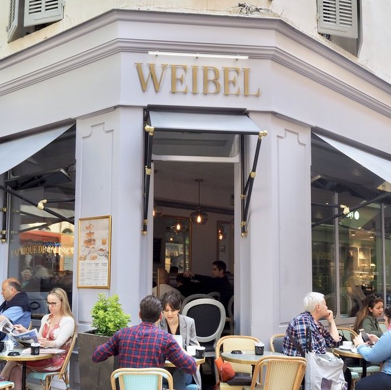

About
Contact
Travelling in France
French Cuisine
Savoury
Sweet
Culture
History
Traditions
Language
Music & Movies

My 5 favourite restaurants and café in Aix en Provence

Eat a
Don Quichotte
salad in a 18th-century mansion
Café Caumont - Hôtel de Caumont, Centre d'Art
3 rue Joseph Cabassol
13 100 Aix en Provence
See the website
Eating pastrys in a café
Maison Weibel
2 rue Chabrier
13100 Aix en Provence
See the website

Papilles by Laurane
12 avenue Victor Hugo
13100 Aix en Provence
Lunch in a typical brewery
Le Grillon
Rue
13100 Aix en Provence
See the website
Have a smoothie in a bookshop
Book in Bar
4 rue Joseph Cabassol
13100 Aix en Provence
See the website